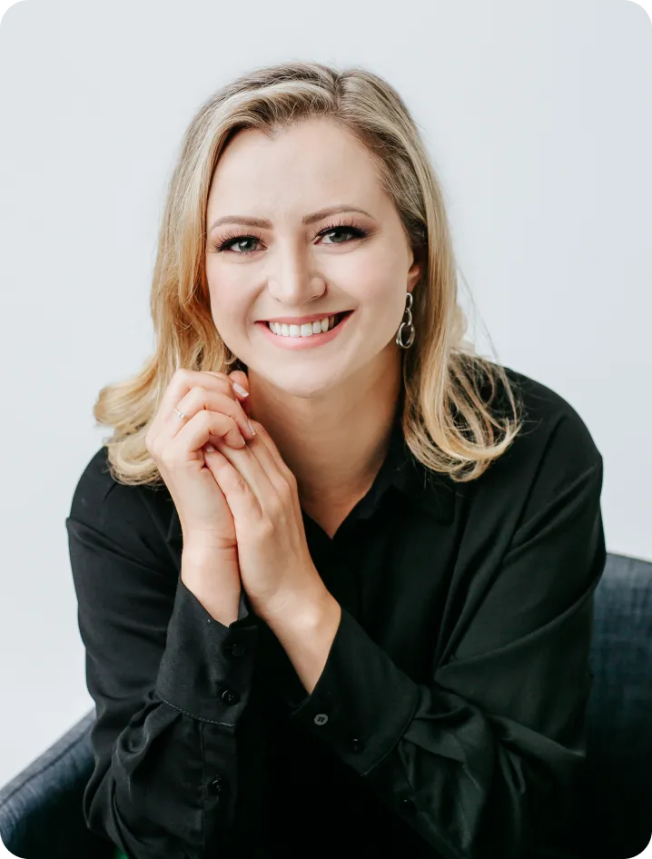

01
Independência financeira
Quer poder se sustentar com os rendimentos dos seus aportes? Arcar com um custo de vida com renda passiva? Posso te mostrar alternativas para isso.

Avaliação gratuita
Consultoria de investimentos isenta e personalizada
Não sabe como começar?
Sou Joice Sperandio, consultora financeira especialista em
investimentos. De maneira imparcial e segura, posso te ajudar a
encontrar os melhores caminhos para fazer o seu dinheiro render
mais.
Nosso primeiro encontro é por minha conta. Entre em contato e agende já a sua avaliação.
Sobre
Especialista em investimentos, sem conflitos de interesse e com foco no atendimento humanizado
Planejadora Financeira, Especialista em Investimentos, certificada CEA e habilitada na CVM como Consultora de Valores Mobiliários sob o registro 002276-4.
Online para todo o Brasil
Com formação em Administração Financeira e MBA em Mercado de Capitais, é criadora de uma consultoria financeira focada em inteligência financeira pessoal e para autônomos. Já realizou mais de 500 serviços de curadoria financeira.
Atuação dentro das normas da CVM, trabalhando de forma independente na orientação, recomendação e aconselhamento personalizado de ativos para seus clientes (sem vinculação com quaisquer instituição financeira).
Apoio a pessoas físicas e profissionais autônomos que já tenham (ou não) uma organização financeira prévia e que já tenham (ou não) experiência com investimentos. Seu atendimento é totalmente personalizado e com olhar para as necessidades e perfil do cliente.
Disponível para atendimentos online para todo o Brasil e também para brasileiros que moram no exterior. Conta com uma metodologia própria na consultoria de investimentos, que contempla um acompanhamento próximo em todas as etapas da aplicação.
Serviços
Nunca investiu e quer começar?
Já investiu, mas quer um serviço transparente e imparcial?
Minha consultoria é focada nas suas necessidades e perfil. Vamos conversar muito, alinhar seus objetivos e traçar planos estratégicos em busca dos seus sonhos. Deixe toda a parte técnica comigo!
01
Quer poder se sustentar com os rendimentos dos seus aportes? Arcar com um custo de vida com renda passiva? Posso te mostrar alternativas para isso.
02
Quer viabilizar seus sonhos mais importantes? Adquirir um imóvel, um veículo, viajar com a família? Te ajudo a pensar no melhor caminho para isso.
03
Quer garantir uma tranquilidade financeira de longo prazo? Quer proteger o futuro financeiro de quem você ama? Vamos juntos encontrar os melhores investimentos.
04
Quer organizar e montar uma reserva financeira? Quer manter uma grana disponível para emergências ou gastos inesperados? Podemos pensar na melhor estratégia.
Método
Minha consultoria é focada nas suas necessidades e perfil.
Vamos conversar muito, alinhar seus objetivos e traçar planos estratégicos em busca dos seus sonhos. Deixe toda a parte técnica comigo!
Garantia de 100% de imparcialidade nos aconselhamentos de valores mobiliários e produtos de investimento.
Os encontros podem ser realizados de forma presencial ou remota, a partir de uma plataforma segura de audioconferência (Zoom). A ideia é que, de fato, possamos construir uma estratégia de investimentos baseada nas suas metas.
Tem muitas dúvidas sobre o processo de aplicação? Não se preocupe, estarei disponível para apoiar em toda a sua jornada, também atuando de forma educativa e esclarecedora, a partir de práticas e simulações.
Se quiser conhecer mais antes de fechar uma consultoria, é possível realizarmos uma primeira conversa onde poderei entender mais sobre sua vida financeira e suas necessidades. Após esse encontro, você receberá uma proposta personalizada.
Depoimentos
Conheça a história de quem já investe de forma prática e segura com o apoio da minha consultoria.
Desde o início do processo, sinto que aprendi muito e me tornei mais segura para me aventurar no mundo dos investimentos. A Joice me deu o empurrão que faltava. Me ensinou a separar a pessoa física da jurídica e hoje consigo tomar decisões mais acertadas.
A consultoria da Joice tem um cuidado especial e domínio pleno no repasse de conhecimento. Gosto muito das partes práticas e simulações. Consegui fazer meu primeiro investimento. É realmente excelente!
Falar em dinheiro entre o casal era algo pesado e desconfortável. Com a consultoria da Joice, conseguimos rever nossos gastos para melhor aplicação de renda. Hoje, estamos começando nossa reserva de emergência.
Invista você também
Basta me chamar e vamos entender juntos quais são as suas necessidades e qual é o melhor modelo de consultoria que podemos seguir.
Me chama no WhatsApp oi@joicesperandio.com.brDúvidas
Tem alguma dúvida específica sobre minha consultoria ou sobre o mercado de investimentos?